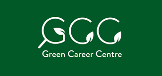
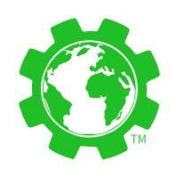

Work Experience
Professional Experience
Urban Water Treatment Co-op Student
Associated Engineering
Edmonton, Alberta
May 2024 - August 2025
Key Accomplishments:
- Created 11+ process automation workflow tools for extracting engineering documentation, reducing search time by 90%
- Enhanced project delivery through earned value management and project management services for 25+ multidisciplinary projects
- Provided engineering services for 35+ municipal water and wastewater infrastructure projects across Canada, contributing to feasibility studies and detailed design reports worth $30 million+
- Delivered asset management services supporting lifecycle management for 800+ pieces of process equipment, valves, and instrumentation
- Processed and analyzed 3 million+ data points to assess equipment conditions and design water/wastewater treatment systems
- Performed 300+ engineering design calculations for chemical dosing, pumphouse upgrades, and wetland treatment systems
Skills Developed / Gained:
Project Management
Python
Asset Management
Water and Wastewater Treatment Design
Earned Value Management
Process Automation
AutoCAD
Plant 3D
R Programming
VBA Excel
Git/GitHub
P&IDs
Process Safety
Microsoft Office (Word, Excel, SharePoint)
Data Analysis
Git/GitHub
Information and Database Management
Engineering Documentation
Project Safety Planning & Hazard Identification
Piping & Instrumentation (P&IDs)
Process Flow Diagrams
Power BI
Data Analyst
Axon Health
Ottawa, Ontario (Remote)
July 2025 - September 2025
Key Accomplishments:
- Conducted 3 user interviews to identify key needs, emotional triggers, and referral barriers experienced by alumni and treatment center staff.
- Developed journey maps, stakeholder personas, and pain point analyses to inform design of a more accessible and trust-based referral experience
- Created low- to mid-fidelity wireframes in Figma for both alumni-facing mobile and staff-facing web applications, enabling streamlined tracking and referral submissions
- Facilitated iterative concept development using team whiteboarding, prioritization matrices, and feasibility assessments, resulting in 3 refined design concepts
- Delivered final design package, including annotated wireframes, storyboard maps, and a reflective report to establish an alumni referral program.
Skills Developed / Gained:
Thematic Coding and Analysis
Qualitative Data Synthesis
Figma
Balsamiq
Google Suite (Docs, Sheets)
Microsoft Office
Survey Design and Analysis
Stakeholder Mapping and Analysis
Data Analysis
Climate Solutions Project Assistant
UBC Climate Solutions Research Collective
Vancouver, British Columbia
September 2023 - April 2024
Key Responsibilities:
- Develop and manage online databases to foster collaboration between +600 faculty members who work on climate-related research
- Support event planning and facilitation for 6 events and workshops with 300+ participants attending
- Collected and analyzed feedback for the collective's events and resources from 100+ participants for future improvements.
- Utilized community outreach to expand social media following by 40%
Skills Developed / Gained:
Information and Database Management
Data Analysis and Integration
Project Management
Digital Marketing
Communications
Stakeholder Engagement
Google Suite (Docs, Sheets)
Business Operations and Supply Chain Intern
Maskwa Gourmet Foods
Edmonton, Alberta
September 2024 - November 2024
Key Responsibilities:
- Spearheaded the end‑to‑end design and deployment of a wholesale ordering portal into the company’s website to streamline inbound requests and position the business to scale sales.
- Orchestrated a comprehensive vendor evaluation of 18 supply chain and food waste management platforms; synthesized findings into a prioritized feature‑matrix (real‑time inventory tracking, alerting, integration) to guide executive software investment.
- Championed a cross‑functional needs assessment to define operations software needs and identify essential features to support future automation, waste reduction, and supply chain infrastructure and logistics planning.
- Mapped end‑to‑end co‑manufacturer capabilities across 4 partners in Western Canada, detailing warehousing, cold‑chain, transport, and distribution footprints to enable data‑driven expansion decisions.
- Piloted usability testing of demos and trials to assess system fit and potential barriers and inform contract negotiations.
- Delivered a synthesized market scan using insights from Capterra, G2, and academic sources to benchmark supply chain digitization strategies in the food industry.
Skills Developed / Gained:
Information and Database Management
Google Suite (Sheets, Docs)
Content Management Systems
Website Development
Competitive Market Landscape Analysis
Supply Chain Management
Logistics Management
Materials Inventory & Procurement Manager (Co-op)
UBC Geering Up Engineering Outreach
Vancouver, British Columbia
May 2023 - September 2023
Key Accomplishments
- Managed the procurement, inventory, and distribution of +10,000 items used for science and engineering activities
- Prepared STEM programming supplies to support outreach to +12,000 youth and provide professional development training to 70+ instructors across 5 locations
- Orchestrated the execution of 50+ workshops and camps by ordering, organizing, and preparing materials
- Fulfilled ordering and material requests from +420 staff, maintaining a 100% on-time delivery rate
Skills Developed / Gained:
Information and Database Management
Python
Microsoft Office (Word, Excel, PowerPoint)
Procurement & Inventory Management
Inventory Usage Analysis
Engineering Education Design
Risk Management
Supply Chain Management
STEM Curriculum Development
Community Outreach
Logistics Management
Project Planning and Management
Safety and Risk Management
Financial Budeting
Financial Management

Sustainability Outreach, Engagement, and Resource Manager
Green Career Centre
Toronto, Ontario (Remote)
September 2022 - March 2025
Key Accomplishments:
- Expanded the organization’s social media following by 113% through outreach to +60 organizations
- Created +550 social media posts and promoted sponsored posts from partnering organizations to more than +20,000 followers and gained +1,000,000 impressions
- Authored 11 blog posts and 8 career development resources read by 5,000 monthly readers
- Implemented active outreach and coordination strategies that increased social media engagement by 74%
- Managed social media analytics and formed 100+ partnerships with various environmental organizations and influencers to promote job postings, articles, and professional development events.
- Received an Intern of the Year Award for outstanding work performance for securing partnerships, launching green job resources, and creating onboarding materials for new staff.
Skills Developed / Gained:
Non-Profit Management
Social Media Management
Sustainability Consulting
Website Development
Content Management Systems
Content Creation
Search Engine Optimization (SEO)
Information and Database Management
Community Development
Event Management & Planning
Community & Stakeholder Engagement
Career and Educational Resource Development
Social Media Management
Google Suite (Sheets, Forms, Docs)
Graphic Design
Market Research
Environmental Employment Researcher
Green Career Centre
Remote
Sep 2022 - Dec 2022
Key Responsibilities:
- Hosted 4 focus groups and workshops of 20+ participants on barriers to environmental employment.
- Collaborated with researchers to form 2 career development resources for +16,000 followers looking for environmental careers.
- Authored a policy brief on employment barriers for jobseekers looking for environmental jobs; provided 4 evidence-based recommendations to address employment barriers.
- Improved social media engagement by 20% for green career development workshops.
Skills Developed / Gained:
Thematic Analysis
Qualitative Data Analysis
Career Resource Development
Community-based Participatory Research
Stakeholder Engagement
Policy Analysis
Google Suite (Sheets, Forms, Docs)
Technical Report Writing
Sustainability Research Analyst
Sustainable Life App
Kelowna, British Columbia (Remote)
July 2022 - January 2023
Key Responsibilities:
- Analyzed +400 statistics and data on environmental indicators to develop a carbon footprint calculator
- Constructed +25 mathematical formulae based on data collection of environmental indicators and ran test models of formulas in Excel
- Developed a feedback analysis model based on +10,000 users’ responses to generate results on users’ carbon footprint
Skills Developed / Gained:
Google Suite
Figma
Environmental Data Analysis
Feedback Analysis Modeling
Mathematical Modeling
UX/UI Design
Quantitative Research
Information and Database Management
Professional Experience (Continued)
Marketing and Communications Intern
University of Alberta
Edmonton, Alberta
May 2022 - Aug 2022
Key Responsibilities:
- Spearheaded engagement & marketing strategy plan; increased engagement by 229% on LinkedIn and 306% on Instagram
- Developed 3 informational guides of 700+ words about company’s prospects for consumers
- Leveraged graphic design to generate 15 promotional posts and 3 videos used to provide tutorials and promote career networking events
Skills Developed / Gained:
Video Editing
Content Creation
Email Marketing
Social Media Marketing
Canva
Event Planning & Facilitation
Graphic Design
Google Suite (Docs, Sheets)
Content Writer
Young Canadians for Resources
Calgary, Alberta (Remote)
May 2023 - Present
Key Responsibilities:
- Wrote 11 published articles to an audience of +5,000 followers, highlighting student job opportunities, career pathways, and industry insights across Canada’s natural resource sectors.
- Applied SEO strategies (keyword targeting, meta descriptions, backlinks) to boost site traffic by 159%, generating over 2,000 visits within 6 months.
- Developed partnerships with engineering organizations to expand content reach.
Skills Developed / Gained:
Search Engine Optimization (SEO)
Content Creation
Social Media Marketing
Article/Blog Writing
Technical Communication
Stakeholder Engagement
Engineering Student Teams

Project Co-Lead & Systems Analyst
Engineers For a Sustainable World
Vancouver, British Columbia
September 2022 - September 2023
Key Responsibilities:
- Assessed a post-consumer food waste audit of 500 kg of food waste in dining halls to evaluate UBC’s All-Access Dining Plan Impact on food waste
- Evaluated +50 life cycle assessments and literature reviews on food items and existing food waste prevention strategies
- Employed Excel to analyze 16 food waste samples from 2,000 students and calculated the carbon footprint of +60 food items
- Showcased research findings to clients, supported by 7 infographics and an action plan, including 11 evidence-based recommendations for reducing campus food waste by 50% by 2030 and improving methodology design
Skills Developed / Gained:
Waste Management
Experimental Methodology Design
Data Analysis
Technical Report Writing
Materials Science & Toxicity Assessments
Stakeholder Engagement
Sustainability Assessment + Reporting
Data Processing & Analysis
Google Suite (Docs, Sheets)
Social Media Marketing
Graphic Design
Proposal and Grant Writing
Information and Database Management
Data Visualization
Carbon Accounting and Footprint Analysis
Community Service + Volunteer Experience
National Student Advisory Council & Project Advisory Committee Member
Courage to Act Foundation
Remote
July 2025 - Present
Key Accomplishments:
- Advise on the development of training curricula, digital resources, and educational toolkits addressing sexual harassment in STEM experiential learning programs
- Review and provide technical feedback on policy proposals, research drafts, and prevention frameworks to support legislative and institutional reforms
- Collaborate with a national project team to design stakeholder-informed professional development materials for post-secondary STEM environments
- Lead regional outreach for campaigns such as Consent Awareness Week, increasing visibility of prevention strategies across academic communities
- Contribute subject-matter expertise to the Courage to Act Advisory Council, shaping advocacy strategies and capacity-building initiatives for safer campuses
Skills Developed / Gained:
Curriculum Development
Policy Development
Policy Analysis
Stakeholder Engagement
Community Outreach
Strategic Advising
Program Development
Advocacy
Housing Education and Outreach Assistant
AMS of UBC Vancouver
Vancouver, British Columbia (Remote)
June 2022 - September 2022
Key Responsibilities:
- Developed and delivered educational workshops on tenant rights and housing resources for over 200 students
- Created comprehensive housing guides and resource materials for international and domestic students
- Provided one-on-one support to students navigating housing challenges and disputes
- Collaborated with campus partners to organize housing fairs and information sessions
- Managed social media campaigns to raise awareness about housing rights and resources
Skills Developed / Gained:
Community Outreach
Workshop Facilitation
Google Suite (Docs)
Canva
Graphic Design
Educational Resource Development
Content Management Systems
Staff Writer
The Ubyssey Publications Society
Vancouver, British Columbia (Remote)
June 2022 - September 2022
Key Responsibilities:
- Wrote 3 articles for the University of British Columbia’s newspaper, which has more than 130,000 visits monthly.
- Collaborate with editors to proofread and revise articles and identify interesting and relevant content ideas.
- Composed sections of a university guide to assist more than 12,000 first-year students with their transition to university.
- Interviewed alumni and current students with a combined following of more than +140,000 followers for a feature piece about student vlogging.
Skills Developed / Gained:
Journalism
Interview-based Research
Content Creation
Article Writing
Search Engine Optimization
Google Suite (Docs)
Student Representative
Departmental Student Council of Chemical and Biological Engineering (UBC)
Vancouver, British Columbia
September 2022 - Present
Key Responsibilities:
- Acted as a liaison between faculty members and the student body for +125 undergraduate students to advocate for student needs.
- Re-elected as student representative with 85% (3rd year) and 88% (4th year) of the departmental vote, reflecting strong student trust and leadership effectiveness.
- Organized departmental field trips to industry sites (e.g., pulp & paper mills, food processing plants) to bridge academic learning with real-world engineering practice.
- Volunteered at 15+ outreach events including UBC Engineering Open House, student study nights, and faculty-sponsored socials, enhancing student engagement and community culture.
- Received the CHBE Volunteer Award for extensive community involvement and leadership.
Skills Developed / Gained:
Student Advocacy
Event Planning & Logistics
Stakeholder Engagement
Public Speaking
Leadership
Community Outreach
Stakeholder Engagement
Organizational and Planning Skills
Interpersonal and Written Communication Skills
Engineering Ambassador
Faculty of Applied Science
Vancouver, British Columbia
June 2022 - Present
Key Responsibilities:
- Participated in 4 events as a keynote speaker for +1,000 prospective engineering students to learn about UBC’s engineering programs.
- Answered more than +60 prospective students’ questions through one-on-one conversations and created 11 responses to frequently asked questions (FAQs) about UBC Engineering
- Produced 6 social media posts featured in UBC Engineering’s public outreach
Skills Developed / Gained:
Public Speaking
Social Marketing
Communication and Interpersonal Skills
Event Coordination
Leadership